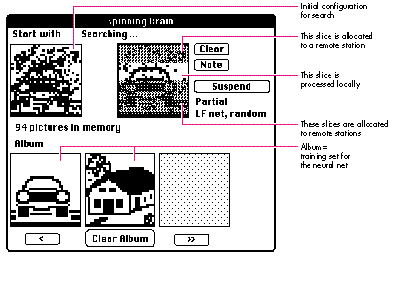
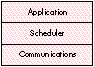
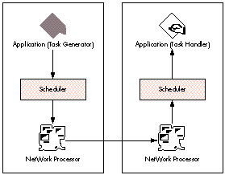
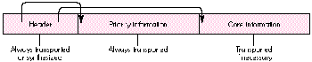
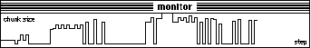
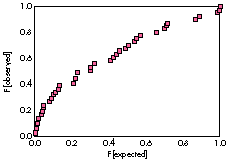
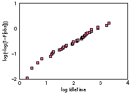
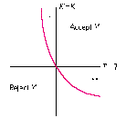

Distributed computing is the wave of the future, soon to come rolling onto the shores
of programming. Programmers should be prepared for the possibilities and challenges
that distributed computing will offer. The NetWork model proposes a design strategy
and provides a testbed implementation that enables you to explore and experiment with
distributed computing on the Macintosh. While this article may not help you write a
better application today, it will help familiarize you with the idea of distributed
computing so that when system support for it comes along, you'll be ready to take
advantage of it.
As computing evolves, we're rapidly moving from a reliance on discrete personal
computers and workstations to a new type of computing infrastructure--acomputing
environment. In a computing environment, applications will make massive use of
many partially coordinated or uncoordinated autonomous computing devices. That is,
one device won't necessarily know which application subtask any other device is
working on or when and how any other device is completing its particular subtask.
These autonomous devices will be connected by multiple threads of communication.
What's more, the computing environment of tomorrow will be continually changing,
with portable devices moving in and out and with new capabilities added dynamically.
Devices will change in time and will have varying availability. In short, distributed
computing in an environment with no guaranteed stability will become the order of the
day.
Visions like Apple's Personal Digital Assistant and the TRON Project give some idea of
what we'll see. The Personal Digital Assistant will be a small intelligent device that
will help you with some aspect of living and working; for example, it might be a smart
map leading you around in a town you're visiting, or a dietary assistant helping you
plan a week's meals, or a TV viewer helping you trace back a thread of interesting
news you've just become aware of. TRON will work the other way, making your
environment smart on its own; for example, the washing machine itself will place
orders for more detergent and will tell the warm water supply to diminish for a
moment because there will be hot wastewater that will feed a heat exchanger. Both
these visions will soon become reality in a distributed computing environment. What
distributed computing will mean for users is that they'll have access to the
considerable computing power that's typically left unused in today's computing setup.
Implementing a system for distributed computing is easy if you reduce or restrict the
availability of personal workstations to their users. The challenge addressed by the
NetWork Project is to make access to idle workstations possible while still
guarantee-ing users immediate access to their personal workstations. NetWork is a
minimal communication and management model designed to operate in this
environment. By handling communication and managing computing resources, it frees
the programmer to think about how to split up a task so that it can be done by multiple
workstations working on small pieces in an uncoordinated and asynchronous way.
NetWork is available on the currentDeveloper CD Series disc and via Internet for those
who want to try it out. This article describes the NetWork Project itself, considers the
types of applications that are most amenable to a distributed computing approach,
thoroughly examines the NetWork model, and then suggests how to implement a
NetWork program on the Macintosh. Because I'm a statistician I've included some
discussion of statistical underpinnings. I've presented this discussion separately,
though, so that if you don't find mathematics fascinating, you can skip it.
NetWork is a project of StatLab, the statistical laboratory at the University of
Heidelberg. StatLab was founded in 1984 to complement the existing mathematical
statistics research group by studying practical applications of advanced statistical
methods. We took a look at what was available as the hardware base for our work and
chose the Macintosh, but since no Macintosh was on the German market at that time,
we bought a Lisa. We've been developing our statistical software on Lisa and Macintosh
ever since. This eventually brought us into contact with Larry Taylor, representing
Apple's Advanced Technology Group in Europe.
During a November 1988 meeting, we discussed future perspectives in computing
with Larry. We tried to identify current gaps and obvious next steps. One thing we
could point to was the discrepancy between the amount of computing power we had
installed and the return it gave us. At that time, we were running an installation of
Macintosh Plus and Macintosh II computers, and the usual turnaround time for a
statistical simulation was one night. This was better than the turnaround time for the
same job on the IBM mainframe time-sharing system (about a week), but still it was
frustrating to have to wait so long while other computer resources lay idle. Just the
same, given the Macintosh's character as an absolutely devoted servant of one master,
how in the world could we find a way to share its computing power while still
guaranteeing reliable and efficient service for the Macintosh owner?
In December 1988 we had a visit from Bill Eddy, then head of the statistics
department at Carnegie Mellon University. In a lecture he mentioned that the CMU
people were annoyed at the discrepancy between installed computing power and the
return it gave them and were doing research on executing iterations asynchronously
(in an uncontrolled way) to make use of aggregated computing power. Until then, I'd
been thinking of the solution only in terms of distributed computing in acontrolled
environment. Bill emphasized that in the computing environment of the future,
computing time per se won't be expensive. In fact, in a network consisting of thousands
of CPUs, computing power will befree --if you can access it. This started me thinking
about how we could possibly make a distributed system work under these
circumstances--that is, in a large heterogeneous environment.
When we next met with Larry Taylor in February 1989, I claimed that we could build
a system for distributed computing based on the Macintosh philosophy of the absolute
priority of the user and at the same time able to cope with a large environment. Larry
agreed to support the project, and we formed a team consisting initially of Larry, me,
Reimer KÜhn and Leo van Hemmen of the Heidelberg Neural Network Research Group,
and Joachim Lindenberg, then a computer science student at Karlsruhe University.
The project started in May 1989. We called it the NetWork Project, a reference to the
fact that in the future the only measure of performance that will matter will be thenet
work done per unit of time , not cumulative computing time or other measures of
resource utilization. We gave ourselves six months to decide on the specifications and
build a working prototype of a distributed system that would fit a Macintosh
environment and be scalable up to some thousands of CPUs. AlthoughMacintosh was the
original development target, we did make sure that the system would run in any other
decent environment (DEC TM, UNIX®, what have you). We finished our first release
one week late in November 1989. As they say, the rest is history.
Worth mentioning is the fact that with NetWork's accelerated development schedule,
we didn't spend a lot of time on planning and administration. That's the nature of
progress sometimes. Fortunately, Apple's Advanced Technology External Research
Group had resources available to allocate to the project on the spot. Without this kind
of flexible support, the NetWork Project could not have succeeded.
Distributed computing will be a great boon to applications where computing power is
critical and where the computing task can be split into discrete subtasks. Such
applications include the following:
In these cases, processing may take too long on one particular machine, but if the
application can tap into the computing power available by sending out subtasks, the
processing can be completed in a much more timely manner.
Many applications that involve working on large data sets can benefit from additional
computing power, even in an environment where completion of a subtask is not
guaranteed. Such tasks include sorting with some appropriate merge/sort algorithm:
the global sort can benefit if a subset has already been sorted by another machine but
need not be affected if the result of the presorting is not available. The same applies to
searching and practically all major accounting tasks. Any statistical analysis based on
exponential families, like normal (Gaussian) distributions, can also benefit from
distributed computing: in these analyses you can calculate global sufficient statistics
from those of partial data sets, if available. Problems of this type are completely
splittable into subtasks and clearly are fine candidates for distributed computing.
But what about problems that have a stronger internal structure than those that are
completely splittable? What about iterative and recursive problems, or problems that
lead to pipeline processing or networks of data flow? We can't automatically assume
that these can take advantage of additional computing power in a distributed
environment where the completion of a subtask isn't guaranteed. Still, mathematical
theory can help us identify problems of this type that are good candidates for
distributed computing.
A SPECIAL CLASS: ASYNCHRONOUS ITERATIONSAs an example of problems with
a stronger internal structure than those that are completely splittable, we'll focus on
iterative algorithms. The trouble with running an iterative algorithm in a
nonguaranteed distributed environment is this: the outcome of iterations in one part of
the problem might critically depend on results from iterations in other parts, and the
result of a previous iteration may or may not be available for the next round. Even if
the original iteration converges to a correct result, we don't know whether the same
will hold true if the iterations are done asynchronously.
Suppose, for instance, we have a mapping to be iterated that operates on some
high-dimensional vector or matrix. To prepare for a distributed version, we restrict
the mapping to a subset by providing the full input but allowing the mapping to operate
only on the coordinates selected by the subset. We allocate different subsets to
different machines for a number of iterations. These iterations are performed in
parallel. The results are collected as they come in and new tasks based on these results
are redistributed repeatedly.
In a guaranteed environment, we could wait for all results to come in before assigning
the next round of tasks. But in a nonguaranteed environment, we don't know whether a
result will come in, and if it does, when. Synchronizing tasks may be impossible. And
even when possible, it would be a waste of computing power, because we would spend
much of our time waiting for the latest result to come in. Enter asynchronous
iterations. Asynchronous iterations don't spend time on waiting. New tasks are assigned
as partial results come in. The only question is, will asynchronous iterations give us a
correct result?
Mathematical theory can tell us under what conditions asynchronous iterations will
yield correct results in a nonguaranteed distributed environment. According to G. M.
Baudet in his paper "Asynchronous Iterative Methods for Multiprocessors" in
theJournal of the ACM , if the original mapping is what mathematicians call a
Lipschitz contraction, in general an asynchronous iteration will converge to the same
limit as the original mapping. Many numerical methods can be formulated such that
they fall into this class. For example, the time-consuming core in many
applications--like solvers for differential equations, optimizers, or matrix
inversions--can be implemented as algorithms that correspond to Lipschitz
contractions.
AN EXAMPLE: NEURAL NETS
As an example of the use of asynchronous iterations in a distributed computing
environment, let's look at a neural net applied to picture reconstruction, from work
done jointly by Reimer KÜhn and me. The specific variant of neural nets we're using is
a Hopfield net. Neural nets provide a useful model for cognitive functions; when we
reconstruct a picture using a neural net, we're modeling how humans might recognize
someone they know in a blurred photograph.
KÜhn and I developed an interactive program for associative recall of visual patterns
called Spinning Brain. The program, which is included on theDeveloper CD Series disc,
first trains a neural net on a series of pictures. Each pixel in a picture is linked to a
neuron in our net. Then rudimentary pictures based on the originals are presented to
the net. The program then reconstructs the originals from the rudimentary pictures
by iterating a certain transformation until a stable state is reached.
In a distributed computing environment, we can take a slice, represented by a subset
of the pixels, and ask an idle workstation to perform a number of transformations on
it. The restriction to one slice means that only pixels in that slice can be changed,
although the full picture is available as initial information. As illustrated in Figure 1,
while one slice is being processed on one workstation, we pass other slices as subtasks
to other workstations. When we get a result, we merge the processed slice with the
rest of the picture; that is, our updating function uses the processed slice to replace
the corresponding part of our original picture. This may introduce an error because
the processed slice may depend on the state in other slices, which may have changed
significantly in the meantime. We repeat the assignment of tasks until we reach a
stable state. This example isn't a Lipschitz contraction and thus isn't covered by
Baudet's convergence result, but under mild regularity conditions, convergence to the
original limit still holds.

Figure 1Spinning Brain in Action
Neural nets are an interesting target for asynchronous distributed computing. If we
accept that neural nets provide a useful model for cognitive functions, we still must
admit that in real biological systems there's no indication of global synchronization
except on a very large scale (for example, daily rhythm). Information processing
takes place in a distributed asynchronous environment (the brain). And we must
admit that this isn't a guaranteed environment: some results may be late or may never
be reached. This is true for the individual and even more so for collective or social
cognitive phenomena. So experiences with neural nets in our environment might shed
light on critical aspects of neural network modeling in an asynchronous,
nonguaranteed environment.
Now that you know how the NetWork model was developed and have an idea of the kinds
of applications that might take advantage of a distributed computing environment, we
turn to the model itself. First I'll list the design goals for the NetWork model; then I'll
list the services NetWork needs and the services the Macintosh makes available. From
there I'll explain the principles of operation and the layers of the NetWork model.
Finally, I'll discuss some important strategies incorporated in the NetWork model to
help meet its goals.
DESIGN GOALSSimply stated, the primary goal of the NetWork model is to make use
of the idle resources of a network while respecting the absolute priority of events and
processes initiated by each machine's owner. The model implementation runs in an
unobtrusive way, making use of free network resources but interfering as little as
possible with any user request. The approach we take is to allow other users to borrow
the computing power if a machine is idle, but to impose a strict rule: if the owner
accesses the machine, the guest is given only minimal time to retreat. The machine has
to be completely available without any noticeable delay. This imposes a time to leave of
about 1/10th of a second, which might be too short for any proper notification or
cleanup.
NetWork takes the view that for every machine there is an owner. The owner may, but
need not, correspond to a real user. For example, if the machine is a dedicated server,
the server process can be considered the owner. Furthermore, a NetWork machine in
general will, but need not, correspond to a physical machine. For example, a cluster of
CPUs may be considered a machine for the purposes of NetWork.
Even if there is no immediate owner access, a machine may be busy because an
owner-initiated process needs the resources of the machine. The absolute priority of
the owner must extend to owner-initiated processes as well. A machine is considered
idle, or free for the purposes of NetWork, if there is no owner access and no
owner-initiated activity. NetWork is only allowed to use resources that are free in
this sense.
The goal to use only free network resources also affects communication. The effect for
any owner other than the one requesting network services should be barely noticeable,
and care must be taken not to compete for network bandwidth. Unfortunately, with
current technology it's nearly impossible to avoid interfering with other users. All
that can reasonably be done is to use "second-class" communication where possible and
to take measures to minimize the number of network accesses and the additional
network load.
To allow for open environments, independence of the underlying communication model
(including network/file/bus-based communication, network topology, and such) and
adaptability to heterogeneous hardware are additional design goals of NetWork. We
aren't narrow-minded: we don't mind making use of a Cray computer via Hyperchannel
if it's idle. Finally, to invite experiments with our model, the implementation of an
asynchronous iteration scheme should be as near to that of a standard iteration scheme
as possible.
In summary, then, the design goals of the NetWork model are as follows:
NECESSARY SERVICESTo meet the design goals, NetWork needs the following
services:
First, NetWork needs a monitor whose only task is to keep track of whether the
machine is idle or whether it's active on behalf of its owner. Since this is
machine-specific information, each machine must be equipped with such a monitor,
which we call an idle monitor.
Second, NetWork needs a process manager that's capable of handling all process
management on remote request. If the machine is idle, the process manager can launch
processes to fulfill remote computing requests, and it's responsible for cleaning up all
remote processes immediately if the state of the machine changes from idle to
busy--that is, if the owner accesses the machine. The process manager is informed of
any idle/busy transition by the idle monitor. It's responsible for guarding the priority
of the owner. The process manager keeps track of active processes on the local
machine.
Third, NetWork needs a communication system. The communication system has to
guarantee reliable services in a possibly unreliable environment. Moreover, it should
take special precautions to minimize interference with owner communication, as
required by the NetWork design goals.
The idle monitor, the process manager, and the communication system form the core of
the NetWork model. They must be present in any implementation of NetWork. This
core provides convenient primitives for distributed computing while shielding the
transport system. In this respect it resembles other approaches, such as those
described by G. Bernard, A. Duda, Y. Haddad, and G. Harrus in their article
"Primitives for Distributed Computing in a Heterogeneous Local Area Network
Environment" and by T. J. Gardner, I. M. Gerard, C. R. Mowers, E. Nemeth, and R. B.
Schnabel in their paper "DPUP: A Distributed Processing Utilities Package." Going
beyond these approaches, NetWork tries to provide a minimal model suited even for a
nonguaranteed environment.
SERVICES AVAILABLE ON THE MACINTOSH
Given that an idle monitor, a process manager, and a communication system are
necessary to the NetWork model, let's look at what we've got on the Macintosh.
The Macintosh doesn't have an idle monitor. If one were available, many applications
could take advantage of it. It could relieve applications of the tedious calculations
needed to find out which sleep value to use. (Some applications never seem to get this
right!) And it would allow a clean strategy for background tasks like indexing and
compressing. So we decided that we should implement an idle monitor for NetWork.
Fortunately, the Macintosh Operating System provides an event queue. Since the OS is
user oriented, there's a clear model for user events, and all are funneled through the
event queue. But looking at the event queue isn't sufficient. A user might have started a
time-consuming calculation and left for lunch. In this case, the machine should be
considered busy. If it's not, the user might come back and find the machine in slow
mode or serving someone else. On the Macintosh, we run a statistic of the CPU program
counter to catch these situations. This still leaves frontmost applications that are
allowed to consume arbitrary time on the Macintosh. This is where the most important
feature of the Macintosh enters: the Human Interface Guidelines. We monitor any
cursor changes and busy cursor states to catch this situation as well. A process
manager is available with System 7. This takes care of many tasks that NetWork has to
fulfill under previous system software. However, processes under System 7 don't have
priority attributes: System 7 can launch processes but doesn't know which processes
to kill when the owner comes back. NetWork has to implement this needed
functionality. What's more, the System 7 Process Manager is designed to launch an
application on a single machine and isn't set up to handle remote launching, so this
additional functionality has to be provided by NetWork. To enable portability, NetWork
has its own process manager. If you're using System 7, the NetWork process manager
maps to the System 7 Process Manager where appropriate and has augmented
functionality where necessary.
AppleTalk is the native communication system on the Macintosh. There are
restrictions, however. Current implementations of AppleTalk support just one
transport system. NetWork has its own communication system, which maps to
AppleTalk if appropriate but isn't restricted to AppleTalk. With NetWork's
communication system you can talk UDP from the TCP/IP suite to one machine while
engaging in AppleTalk with another one. NetWork supports any number of concurrent
transport systems, with no gateway needed. And the NetWork communication system
tries to reduce additional communication load that would compete with immediate
users.
NetWork's communication system is message based. We wanted our message-passing
system to be as flexible and powerful as possible. In particular, we wanted it to have
extremely low overhead, we didn't want it to impose unnecessary size limitations, and
we didn't want it to be restricted to certain operating systems or transport systems.
For these reasons, we decided to use our own message- passing system, instead of using
Apple events.
For the Macintosh, we've bundled the idle monitor, the process manager, and the
communication system kernel into a control panel extension, the NetWork Processor.
To use NetWork, you move the NetWork Processor into your System Folder and restart
your Macintosh. Programmers can access the NetWork services with the help of a
library (NetWorkLib.o) and interface files that come with NetWork. For tips on how
to use NetWork's idle monitor and communication system, see "Cheap Thrills: Using
NetWork's Services."
NETWORK LAYERS AND PRINCIPLES OF OPERATION
NetWork views the computing environment as a set of machines with processes
running on them. Each machine has an owner, who has absolute priority on this
machine. Processes can run on behalf of the (local) owner, or they can satisfy a
remote request. If a process is running on behalf of a remote request, it should be
terminated immediately when the owner accesses the machine. A process handles tasks
and eventually may generate tasks for remote execution. A task can be delegated to
another process, possibly on a different machine, and results may or may not be
returned.
The NetWork programming model has three layers, as shown in Figure 2. The top
layer, the application layer, contains the application-specific code. Apart from
initialization and cleanup sections, this code should be able to define subtasks and to
handle results from subtasks if available. The specific details of this layer are, of
course, application dependent.

Figure 2 Layers of the NetWork Programming Model
The scheduler layer provides support for asynchronous iterations. The NetWork
scheduler monitors and stimulates the generation, assignment, and integration of
subtasks. While the proper generation of subtasks is application dependent,
theNetWork scheduler can monitor the overall system behavior and try for dynamic
load balancing. Task assignment is an interaction between scheduler and application.
The communications layer forms the basis of the NetWork design. It provides the basic
communication services needed for the network system. In particular, it provides
transport shielding to cope with a potentially unreliable environment. If necessary
(for example, to implement diagnostic or management tools), the services of the
communication system can be accessed directly, avoiding the scheduler.
NetWork is implemented as a message-passing system. A process may send task
descriptions as messages, and results are returned as messages. If a process is set up
for task generation, the scheduler will ask the application periodically for the
definition of a new task. If a new task definition is given, the scheduler will pass this
information to the communication system for further transmission. If a process is set
up for result handling, the scheduler will inform the application of any result
received by the communication system.
In the NetWork model, messages flow as diagrammed in Figure 3. The task-generating
application defines a task message and hands it to the scheduler. The scheduler does the
necessary housekeeping and passes the message to the NetWork Processor, which
communicates it to the receiving NetWork Processor. The receiving NetWork
Processor launches the destination application (if necessary). The destination
scheduler passes the message to the task handler of its application.

Figure 3 Simplified Diagram of the NetWork Message Flow
Since NetWork is designed to work in a nonguaranteed environment, no assumptions
about the lifetime of a communication partner are made. Hence, a process that's
generating tasks doesn't know its target in delegating a task. The scheduler proposes a
target to which the next task can be delegated when asking for a new task definition.
The application is free to accept this proposal or to select a different target using a
lookup server or any other source of information.
Messages are addressed to processes, residing on machines. However, in a
nonguaranteed environment, no assumption about the existence of a communication
partner can be made. The address refers to a process class (defined as any instantiation
of the underlying program) rather than to a particular process instance. On the
recipient machine, NetWork checks whether the target is active--that is, whether
there is a corresponding process. If so, the message is made available. If the machine is
idle but no corresponding process is active, NetWork tries to locate the program and
launch it first. If it fails, the message is discarded. No prolonged negotiation takes
place and no acknowledgment is made. The task message is an implicit launch command,
and the completed result is the only acknowledgment, if any. If the state of a machine
changes from idle to used--that is, if the owner accesses the machine--NetWork
immediately kills any application it has launched.
SOME IMPORTANT STRATEGIESThe NetWork model uses three important
strategies to meet its goals effectively. These strategies have to do with minimizing the
communication load, recruiting idle machines that are most likely to remain idle, and
minimizing the probability of conflicts among incoming messages.
Strategy 1: Minimize the communication load. As stated earlier, one of
NetWork's design goals is to minimize the communication load to avoid competing with
machine owners. We've already mentioned that NetWork allows a process to be
launched implicitly by sending a task addressed to it, and that NetWork avoids
negotiations and explicit launch sequences. This is done to reduce additional
communication load. Of course, it's possible to use explicit authentication and
authorization schemes and exert direct control over launching with NetWork, and in
any environment where security is required this will be necessary. But it's in no way
required for a minimal implementation of distributed computing, so it's not required
in the NetWork model.
The decision not to enforce any session maintenance techniques, nor even any
acknowledgment schemes, is another measure to minimize communication load.
NetWork can operate in a connectionless mode, so session maintenance techniques or
acknowledgment schemes aren't required. Again, if needed, both can be applied.
Since NetWork is designed to work in a noisy environment where no guarantees of
availability or performance are given, NetWork has to be prepared for messages that
are outdated or out of context. To minimize communication load in these cases,
NetWork encourages a separation of descriptive information from bulk load.
Conceptually, each NetWork message consists of a priority part, which should be small
and contain just enough information to indicate whether the message is usable in a
given context, and the message core, which should contain the bulk of information, as
shown in Figure 4. When a message arrives, the priority part along with the usual
administrative information is presented to the recipient for inspection. Only if the
recipient accepts the message as usable does the core information need to be
transported.

Figure 4 Message Segments
The separation of priority information from core information is only a conceptual one.
The NetWork communication manager will do packing/unpacking and transport in a
way that seems optimal for the transport system. In particular, for a packet-oriented
transport system, the communication manager will pack header and priority
information into a first transport system package and fill it up with as much core
information as fits reasonably into this package. (Note that the communication
manager should signal a received message only if all parts of the priority data are
received, but it need not rely on a handshake.) Subsequent packages with the
remainder of the core information will be sent only if the recipient requires this
information. Thus, unnecessary information load can be avoided. The scheduler
included in the NetWork distribution package is adapted to this optimization strategy.
Strategy 2: Recruit the idle machines most likely to remain idle. We
need to identify idle machines and have a strategy to allocate them for cooperation. The
idle state is determined by the idle monitor, and idle machines can be registered as
possible compute servers using a lookup server. Of course, we'd prefer to use those
machines that will be available for some time and to avoid those machines that are free
for the moment but will be used shortly. To do this, we need some way to distinguish
the most promising machines--some method to ascertain what we'll call
thehazard-to-leave-idle-state . Our first informal review of literature and
interviews with experts gave us little hope of finding some indicator of this hazard.
Still, disregarding any recommendations, we implemented an allocation scheme based
on observed idle times and then measured the availability of idle machines. Our results
implied that the frequency of useless (short-time) allocation of machines can be
drastically reduced by waiting until a certain critical idle time has been exceeded
before allocating a task to a particular machine. This is the approach we take in the
NetWork implementation. (If you're interested in the details of how we arrived at our
conclusion, see "Diagnostic Plots for the Statistically Minded.")
Strategy 3: Filter incoming messages. A scheduler for NetWork can be
integrated in applications and make use of the services of the NetWork system. In the
current NetWork implementation, a scheduler prototype is provided, together with a
library that interfaces with the NetWork communication system. The scheduler asks
the application regularly whether a new task should be defined or informs the
application of incoming messages. It also does a preliminary check for the usefulness
of incoming messages, filtering out messages that can be identified as useless or
outdated with respect to the application context.
To guarantee fail-safe behavior, tasks should be allocated redundantly. As a
consequence, more than one result may be returned relating to a particular subtask.
This poses a problem to the scheduler. Assume we have two incoming partial results.
If the first result is based on an earlier state and if less work (fewer iterations) has
been done for this result, it's clearly outdated. Or if the first result is based on more
recent information and if more work has been invested in this result, it's clearly the
better one and should replace the other result. The remaining cases enter a critical
region where the scheduler is required to make a decision. (See "Deciding Between
Results" if you'd like to read this in mathematical language.)
Our strategy is to accept only those packages that can be accepted without any further
analysis. Instead of putting computational power into evaluating the optimal
acceptance decision, we try to keep the probability of entering the critical region low.
Since our criterion is the time it takes to perform the task, and both acceptance
decision making and task allocation are done by the same machine, there's a trade-off
between those two, and we can keep the expected loss due to a wrong decision small by
keeping the probability of conflicts low.
The NetWork scheduler uses an adaptive task assignment scheme to minimize the
probability of these conflicts: from the received results, the scheduler tries to
estimate the relative complexity of a subtask and the relative computing power of the
partners. New tasks are calibrated so that the expected return time is distributed
homogenously, thus reducing the probability of conflicts. An application can override
or augment the generic strategy as provided by the scheduler with a more
application-specific strategy. In the Spinning Brain example that comes with
NetWork, you can see the scheduler trying to adapt to the relative computing power
and reliability of the partners. Choose the Scheduler menu item from the Control
menu. You'll see a running plot of the task size assigned to machines versus the time of
allocation by NetWork, as illustrated in Figure 7.

Figure 7 Running Time-Plot of Assigned Task Size, From Spinning Brain
NetWork's ability to adapt itself to the relative computing power of the partners
provides a natural way to do load balancing. By finding out the relative performance of
the CPUs available and allocating larger tasks to more powerful CPUs, NetWork is able
to effectively balance the work load.
Read this if you're interested in the details of how we compared the idea the experts
gave us about predicting the hazard-to-leave-idle-state versus our own hunch about
how it might be predicted.
The general idea we met with was that usable idle time would be controlled by a
Poisson process, so the idle time would have an exponential distribution. But since an
exponential distribution is memoryless, there would be no chance for optimization
based on waiting times: the hazard-to-leave-idle-state would be constant.
To test this idea, we used a special statistical tool-- diagnostic plots. Diagnostic plots
represent statistics in a way that makes their message easy to grasp. A diagnostic plot
is often designed by a statistician in such a way that the significant information shows
up as the deviation of a curve from a straight line, visual information that's easy for
humans to process. To find out whether a certain distribution is exponential, we plot
observed idle times against those that would be expected given an exponential
distribution. If the idle time distribution were in fact near to exponential, this plot
would exhibit a straight line. As you can see in Figure 5, this clearly isn't the case.
How we plot the relevant information to test for a Weibull distribution is more
complicated, so we won't go into the details here. (Ask your statistician!) Suffice it to
say that as shown by the fairly linear behavior of the plot in Figure 6, the idle time
distribution is more adequately approximated by a Weibull distribution than by an
exponential distribution.
This Weibull distribution has a decreasing hazard rate. For the application this means
that it's helpful to know how long a machine has been idle. In particular, the
hazard-to-leave-idle-state is lower if a machine has been idle for some time.
So if you have a chance to select among machines, here's the winner's strategy: choose
the machine that's been idle for the longest time.

Figure 5 Sample Plot Checking for Exponential Distribution

Figure 6 Sample Plot Checking for Weibull Distribution
DECIDING BETWEEN RESULTS
For the mathematically minded: Assume we have some effective time scale (some
measure of effective iterations done, for example). Assume we have two incoming
partial results Y and Y' , where Y is based on information available at effective time
T , with K iterations done on Y , and Y' is based on information available at time T' ,
with K' iterations. Let Y arrive at time t , Y' at time t' > t. Should we replace the
results ofY by those of Y' ?
There are trivial cases: If T' < T and K' < K , then Y' is clearly outdated. Or if T' > T
and K' > K , then Y' is better than Y , so Y should be replaced. Put another way,
results based on better initial information ( K' - K > 0) and with better iteration
count (T' - T > 0) can be accepted a priori. Results based on poorer initial
information (K' - K < 0) and with fewer iteration counts ( T' - T < 0) can be
rejected a priori. For the remaining cases, a decision must be made. Figure 8 shows
the limits of the acceptance region. The NetWork strategy is to take only those results
that can be accepted a priori.

Figure 8Limits of Acceptance Region for Results
Now for the good part. You're familiar with the design and operation of NetWork.
Here's your chance to explore how your application might make use of distributed
computing with the help of NetWork. The following discussion will give you a general
idea of how to make your application work with NetWork, but you should study the full
example code included with NetWork on theDeveloper CD Series disc for a thorough
understanding.
NetWork will communicate with your code by NetWork events. You have to augment
your event- handling code to handle these events. If the what field of the EventRecord is
NetWorkEvt, the message field of the EventRecord will contain a pointer to a NetWork
message.
{******************** The Event Handler *******************}
PROCEDURE DoEvent(Event: EventRecord);
. . .
BEGIN
CASE Event.what OF
mouseDown:
DoMouseDown(Event);
. . .
{*** You add a case to handle events of type NetWorkEvt. ***}
NetWorkEvt:
NetWorkScheduler.HandleMsg(MsgPtr(Event.message));
. . . app4Evt:
. . .
END; {case}
END;
To keep NetWork running, you should give it a chance to fulfill its regular tasks, like
asking you for new jobs or looking for idle workstations. This should be done in your
main event loop. Since we're interested in getting the most from our computing power,
we're using a slightly more elaborate event loop than you'll usually find in the DTS
Sample Code on the CD. We prefer to calculate the next time to call WaitNextEvent in a
more flexible way to get the most from our computing power if our application is
frontmost. The next time to call WaitNextEvent will be kept in a global variable
gNextEventLoopTime.
{******************** The Event Loop ******************}
PROCEDURE MainEventLoop;
CONST
cSleep = 0; {Ticks to wait for wake-up}
cBackgroundSleep = 20;
cEventLoopDelay = 1;
{3 = 1/20 second, recommended interval between
WaitNextEvents for human interaction. We
take 1 for faster response.}
VAR
newEvent: EventRecord; {Event from GetNextEvent}
hasWNE: BOOLEAN;
eventReceived: BOOLEAN;
mySleep: LONGINT;
BEGIN
hasWNE := system.WNEIsImplemented;
mySleep := cSleep; {This is the foreground delay.}
REPEAT {Loop until done.}
IF hasWNE THEN
BEGIN
{ No mouse moved is wanted, so pass NIL for the
mouseRgn.}
eventReceived := WaitNextEvent(everyEvent, newEvent,
mySleep, NIL);
UpdateCursor;
{Change the cursor shape if appropriate.}
END
ELSE
BEGIN
SystemTask; {Let the system do its stuff.}
UpdateCursor;
{Change the cursor shape if appropriate.}
eventReceived := GetNextEvent(everyEvent, newEvent);
END;
SetEventLoopTime(cEventLoopDelay);
{Adjust global variable gNextEventLoopTime.}
IF eventReceived THEN DoEvent(newEvent)
ELSE {No real event, just timeout}
REPEAT
{*** You add the following section. ***}
NetWorkScheduler.PeriodicTask;
{Allow to generate new tasks.}
IF NlTask <> noErr THEN
{Try to look up new partners.}
ProgramBreak('NlTask Error');
mySleep := NetWorkScheduler.GetSleep;
{Adjust sleep value.}
{*** End of added section ***}
MyTask(BackContinue, mySleep); {Do local job.}
UNTIL (gTaskState <> TaskOK) |
(LongIntPtr(Ticks)^ >= gNextEventLoopTime);
IF PAbortFlag THEN gTaskState := TaskCancel;
{PAbortFlag is a function to check whether the standard
abort combination has been pressed. gTaskState is a
global variable where we keep the current state of the
program.}
IF gTaskState IN [TaskExit, TaskFatal, TaskAbort] THEN
gAppDone := TRUE;
UNTIL gAppDone;
END; {End of main event loop}
Of course, accessing global memory locations like Ticks is bad programming; you
should use TickCount instead. And you shouldn't do direct comparisons
(LongIntPtr(Ticks) ^ >= gNextEventLoopTime); you should use a function to do
comparisons instead. But because this part is in the main loop and we didn't want to
waste any time here, we use this dirty inline comparison.
To start NetWork, you have to generate an instance of the scheduler by calling
new(NetWorkScheduler) and activate it by calling NetWorkScheduler.init.
NetWorkScheduler is defined in the file SchedulerUnit.p that comes with NetWork. If
you've activated or used the scheduler, you should always call NetWorkScheduler.free
before leaving your program.
If you're going to generate subtasks, you have to override the task generator. Take the
prototype definition tTaskGenerator from SchedulerUnit.p and adapt it to your needs.
Create a task generator object and call NetWorkScheduler.InitTaskGenerator to install
it. To customize a task generator, you have to write a function NewTask. NewTask
should return NIL if no subtask can be defined, or a message pointer defining a new
subtask. The proper task definition is private to you. The scheduler's task-sending
activity can be controlled by NetWorkScheduler.SetSending.
If you think of a master-slave setting, you can implement the code for both sides in one
program. At run time, you can use the function Master from the NetWork library to
find out whether you're running as master or as slave.
{**************** Main Routines *******************}
PROCEDURE MyInit; {(VAR TheState : TaskStateType)}
VAR
myTaskHandler: tTaskHandler;
myMasterTaskHandler: tMasterTaskHandler; {Used for masters only}
mySlaveTaskHandler: tSlaveTaskHandler; {Used for slaves only}
myTaskGenerator: tMyTaskGenerator;{Typically for masters only}
myResultHandler: tReplyResultHandler;
. . .
BEGIN
. . .
{Initialize the NetWork library.}
IF InitNetwork(NetWorkEvt) <> noErr THEN fatal;
{Initialize the name lookup manager.}
IF NlInit <> noErr THEN fatal;
{Create and initialize a NetWorkScheduler. Needs a persistent
memory, so NetWorkScheduler must be a global variable.}
new(NetWorkScheduler);
IF NetWorkScheduler = NIL THEN fatal;
NetWorkScheduler.init; {The scheduler is up and running now.}
{Create and initialize a handler for incoming messages.}
IF NetWorkScheduler.Err = noErr THEN
BEGIN
IF Master THEN {Master is defined in NetWorkLib.}
BEGIN
new(myMasterTaskHandler);
myTaskHandler := tTaskHandler(myMasterTaskHandler);
END
ELSE
BEGIN
new(mySlaveTaskHandler);
myTaskHandler := tTaskHandler(mySlaveTaskHandler);
END;
IF myTaskHandler <> NIL THEN
NetWorkScheduler.InitTaskHandler(myTaskHandler);
END; {End of NetWorkScheduler installation}
. . .
{Create and initialize a task generator.}
IF Master THEN
BEGIN
new(myTaskGenerator);
IF myTaskGenerator <> NIL THEN
NetWorkScheduler.InitTaskGenerator(myTaskGenerator);
END;
. . .
END;
Programming for NetWork in general consists of writing a master process (later to be
the client seeking additional computing resources) and a compute server. The compute
server has to be distributed to the coworkers (the additional computing resources that
can be called upon). To guarantee fail-safe behavior, both task generation and
task-handling functions should be implemented on the original generating machine so
that it can operate by itself if need be. These functions must be implemented in the
master process (compute client). Note that to avoid virus proliferation, worms, and
other nasty things, NetWork doesn't do any active transportation of code. The code to be
launched has to reside on the destination machine and is under the control of the
destination owner.
The compute server must be able to accept and handle subtasks. Although it's possible
to use the message-handling system of NetWork directly, we recommend you use the
supplied scheduler model instead. If you're going to accept subtasks, you have to
customize the task handler. Take the prototype definition tTaskHandler and adapt it to
your needs. Create a task handler object and install it by calling
NetWorkScheduler.InitTaskHandler. To customize a task handler, you have to write a
function MsgUsable and a procedure MsgEvaluation. The scheduler will get the priority
information from an incoming message to the PriorityBuffer indicated by MsgPrioPtr.
MsgUsable should check any incoming task on the basis of the header information and
the available priority information. If MsgUsable returns TRUE, the scheduler asks the
message system to pass the bulk of the data describing the subtask to the core buffer
indicated by MsgCorePtr. You have to write a procedure MsgEvaluation to take the data
from the buffer and initiate the proper task execution. To return a result to the
sender, you can make use of the ReplyMessage function.
With NetWork, programs can be launched automatically on remote request. Programs
launched on remote request may be terminated by NetWork when the owner accesses
the machine. Don't assume it's safe to continue processing at that time if you receive a
Command-Q. You must clean up as soon as possible or you won't have another chance.
Also note that you don't have the time to report results, because all
messages--including those about to be transferred--are killed when your application
dies. Remember that NetWork's priority is with the owner, not with your application.
The only way to override this is to control the process class of your application. If it's
necessary to clean up, set your process type to master after program initialization and
call the Idle function regularly. But be forewarned that users may become annoyed at
having an alien application around, and your application will likely be removed from
the list of welcome visitors.
RISKS IN DISTRIBUTED COMPUTING
Anyone working in distributed computing should be aware of the risks involved in a
distributed system. Such risks include those relating to competition for resources as
well as those relating to security.
COMPETITION FOR RESOURCES
Any distributed computing system competes for computing and communication
resources. NetWork has been designed to minimize the impact of this competition on
priority users. Still, the version of NetWork currently distributed uses the AppleTalk
Name-Binding Protocol (NBP) to register and look up idle stations, and the AppleTalk
NBP is prone to impose a cumulative load that increases with the square of the number
of workstations. This will create a problem if the number of workstations in the
network is very large. The version of NetWork in distribution won't impose a big load
if used in networks with up to 100 workstations. If you do have more workstations in
your local zone, please consult theNetWork Programmer's Guide for suggestions--our
research version scales linearly to accommodate up to 10,000 workstations. If you
have more than 10,000 Macintosh computers, we'll have to invest some additional
thinking, which we'll gladly do.
Distributed computing systems can also compete for disk space with priority users.
This is a crucial point for UNIX-based systems. On a UNIX-based system you can send a
guest process to the background, but this still may result in a swapping behavior
that's a nuisance to the priority user (unless you're using Mach). For NetWork, we
decided to kill any guest process if the priority user returns, so NetWork doesn't
compete for disk space.
SECURITY CONSIDERATIONS
Other risks relate to the security of code and information. Just as programs and data
can carry viruses into a machine from the outside, so distributed computing guests can
bring in something undesirable. When you grant access to another user, you never
know whether you're enabling the importation of a Trojan horse. For the present, we
don't see any way to guarantee system security under conditions of distributed
computing, so we've chosen two ad hoc actions to improve security.
First, we refrain from code migration. Of course, it would be most convenient to make
use of a remote machine without any assumptions about the availability of code on that
machine, and we'd love to do this. But this would require moving executable code if
necessary or training the receiving machine on the job. Because we don't see any way
to check whether that code contains a virus, the code to be executed is required to be
already available to the host machine. Furthermore, NetWork assumes that an access
path is denoted on the host machine and launches only applications resting in this
trusted path. This path may direct code to a server, and the usual access control
mechanisms apply.
Second, we include with NetWork an example called RemoteJob, designed to educate
users about the risk of allowing remote execution of powerful code like MPW. Even if
there's no virus attached to the code of MPW, it's powerful enough to allow you to
compile new programs, viruses and all. The point of including this example is to
forewarn you of this possibility. RemoteJob takes commands from the sending station,
passes them to the recipient, and launches the MPW shell there if it can be found in the
trusted path. The default example passes a "beep" command to MPW, but it could just
as well get MPW to compile a virus and install it on the fly. The moral of the
story:Never put a shell or any powerful tool in the trusted access path.
BACK FROM THE FUTURE
After reading this article you should have a good idea of the possibilities and challenges
that are bound to confront programmers with the advent of distributed computing.
These possibilities and challenges are already being actively explored in some
quarters. In particular, the NetWork model of distributed computing has already been
used in a variety of applications. Some examples: a distributed file system using
NetWork was built at the University of East Anglia; a U.S. company used NetWork to
implement a distributed rendering system; and an IBM subsidiary in France is using
NetWork for distributed compilation/program construction. But for most of the world,
the distributed computing wave is still just out there on the horizon. We need to begin
playing with and prototyping applicationsnow with distributed computing in mind, so
that when system support arrives, we'll know how to use it. In sum, the time we spend
experimenting with NetWork now is sure to pay off in the not-too-distant future when
the distributed computing wave comes rolling in.
CHEAP THRILLS: USING NETWORK'S SERVICES
Even if you don't plan to implement a NetWork system, you might find some of
NetWork's services very useful indeed. If you install the NetWork Processor, you can
make use of any NetWork service. For example, you can ask NetWork whether your
station is to be considered idle instead of implementing all the code yourself.
THRILL 1: USING THE IDLE MONITOR TO HELP YOU EXECUTE A BIG JOB
Move the NetWork Processor into your System Folder and reboot your Macintosh.
Modify your code to include NetWork.p and link to NetWorkLib.o.
Add the following line to your initialization code:
myErr := InitNetWork(NetWorkEvent);
Add the following line to the idle branch of your main event loop:
IF Idle THEN DoNextRoundOfMyGreatBigJob;
DoNextRoundOfMyGreatBigJob is executed whenever NetWork considers your machine
to be idle.
A word of warning: If DoNextRoundOfMyGreatBigJob is compute intensive, this will
move your machine to the busy state, so "WHILE Idle DO . . . " would not be a good idea.
THRILL 2: USING THE IDLE MONITOR TO LAUNCH AN IDLE TASK
Move the NetWork Processor into your System Folder. Create a folder named NetWork
Idle Tools in your System Folder. Move your application into NetWork Idle Tools. Your
application will be launched whenever NetWork considers your machine to be idle.
Note that because NetWork will kill any application it has launched when the state of
the machine changes to busy, this use of the idle monitor makes sense only for turnkey
applications such as screen savers. (See the ScreenSaver example provided with
NetWork.)
As NetWork has a chance to learn that the application is not a user-initiated process,
the machine will stay in the idle state (in contrast to Thrill 1).
THRILL 3: USING THE COMMUNICATION SYSTEMMove the NetWork Processor
into your System Folder. Modify your code to include NetWork.p and link to
NetWorkLib.o.
Add the following line to your initialization code:
myErr := InitNetWork(NetWorkEvent);
Add the line
MyHandleMsg(MsgPtr(Event.message));
to your main event loop, like so:
CASE Event.what OF
mouseDown:
DoMouseDown(Event);
. . .
NetWorkEvt:
MyHandleMsg(MsgPtr(Event.message));
Your application will now receive messages from NetWork. You'll have to write the
MyHandleMsg procedure to evaluate the messages. Message format and support
routines are documented in the NetWork Programmer's Guide.
REFERENCES AND FURTHER READING
GÜNTHER SAWITZKI sold his car seven years ago and hasn't regretted it for a second
since then. He thinks that cars, along with sports (except for art forms like aikido),
are relics of the past. He works (within walking distance of home) at the University of
Heidelberg's Institute for Applied Mathematics, doing computational statistics and data
analysis when he's not busy with software engineering and development. He headed the
NetWork Project and designed the basis of NetWork. In his opinion, Aldous Huxley's
Brave New World is a vital book of immediate importance. His favorite game is go
("It's the only game that allows me to comprehend that it's a game"), his favorite food
is mousse au chocolat (with white and black chocolate), and his favorite time of day is
tomorrow. *
For more on the TRON Project, see The TRON Project, 1988: Proceedings of the
Fifth TRON Project Symposium. *
Numerical methods that can be formulated as Lipschitz contractions are
discussed in Part 2 of Parallel and Distributed Computation by D. P. Bertsekas and J.
N. Tsitsiklis. *
Hopfield nets are described in more detail in "Spinning Brain: An Interactive
Program for the Associative Recall of Visual Patterns" by R. KÜhn and G. Sawitzki and
in Chapter 5 of Brains, Machines, and Mathematics by M. A. Arbib.*
The signature you use when you experiment with NetWork should be NetE (this
spelling). This signature has been registered with Apple by the NetWork Project and
is reserved for experimental use. *
Further details on customizing the task generator are given in the NetWork
Programmer's Guide .
*Further details on customizing the task handler are given in the NetWork
Programmer's Guide .*
THANKS TO OUR TECHNICAL REVIEWERS Michael Gough, Larry Taylor, Peter
Zukoski*
FURTHER CREDITS Studying asynchronous iterations in a nonguaranteed (random)
environment was suggested by the paper by W. F. Eddy and M. J. Schervish entitled
"Asynchronous Iteration." W. Rheinboldt suggested the scheduler strategy of accepting
only those packages that can be accepted a priori. The NetWork communication system
was designed and implemented by J. Lindenberg. The NetWork software and
documentation is © 1989-1992 The NetWork Project, StatLab Heidelberg. NetWork
is free for personal, noncommercial use. The most recent version can be accessed on
Internet from StatLab.uni-heidelberg.de[129.206.113.100]. *